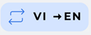
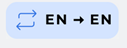
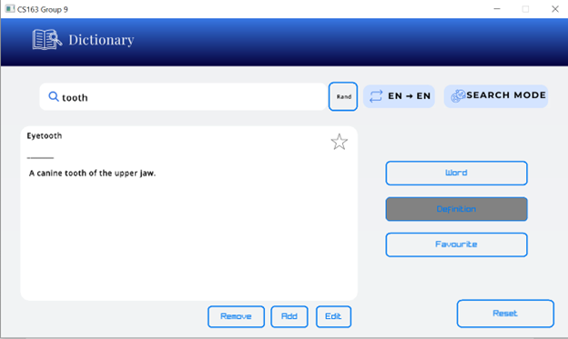
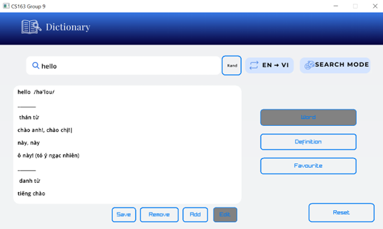
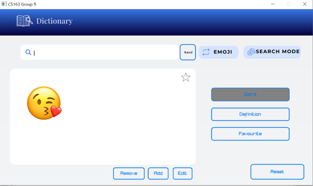

Author:
Our project provide a customize dictionary using some algorithms and data structures to improve the user experience.
(this application works only on Windows because of using wchar_t which has different size on different platforms)
MinGW 64-bit version. At step 6, please run the following command instead:
pacman -S mingw-w64-x86_64-gccMSYS2 MinGW 64-bit terminal and run the following command:
pacman -S makecd Visualgo_CS162cmake -G"MSYS Makefiles" -S . -B buildmake -C buildbuild folderbuild to run the program.cd build && ./Visualgo_CS162assets – contains the assets used in the programbuild – contains the executable fileinclude – contains the header and source files of the program
core – contains the core classes of the programdraw - contains the classes that draw objects structuresstuff - contains other classes that are used in the programYou can find the documentation of the project here.




It switches between these button when clicked.







When searching for any word, there is a Star.
When it is non favourite word

When it is favourite word

You can add/remove to favourite list when click that Star



Some header file we have in core(for back end) in project: Word.h, Trie.h, Dict.h, Map.hpp, Api.h,Quiz.h.
Word.h: file for saving data
Trie.h: file for build trie data structure
Dict.h: file for creating dict
Map.hpp: file for build map data structure
Api.h: file for application
Quiz.h: file for quiz
We store data in folder data. First we got raw data in text file and wrote it to binary file to make it faster to load data when launching project. For each type of dictionary, we have dataset equivalently.
Anh Viet dataset contains 105866 words, raw file is Anh_Viet.txt (14982KB), the file for using is Anh_Viet.dat (24572KB- it can be modified when we add or remove). We save Anh_Viet_Origin.dat for reset the dict when needed
Anh_Anh dataset contains 116989 words, raw file is Anh-Anh.txt (13466KB), the file for using is Anh_Anh.dat. We We save Anh_Viet_Origin.dat for reset the dict when needed
Viet_Anh dataset contains 54373 words, raw file is Viet_Anh.txt(2144KB), the file for using is 6393KB. We save Viet_Anh_Original.dat for reset the dict when needed)
Emoji dataset contains 1717 icon, raw file emoji.txt(149KB) , file for using emoji.dat(200KB)
For each type of data set we have files for save history and favourite words.
We use class Word among all dataset (Anh Viet, Anh Anh, Viet Anh, Emoji)
We use wstring for inputing unicode character from file
Class Word:
Class Type:
wstring type (used for save the type of word (danh tu , tinh tu, pho tu,....)
Wstring phrase (used for save the collocation, phrasal verb)
Bool Isdefinition ( used for check if we need to use Class Definition)
Class Definition:
wstring word (save word)
wstring pronounciation (save pronunciation)
wstring imagePath (We use imagePath only for Emoji dataset and set default is Null)
bool isType for checking if we need to use Class Type
(All the bool datatype above is used when writing or reading from binary file)
Class Dict:
We need
Structure and Algorithm for inserting, deleting and searching data
Class Trie : (building trie )
Class TrieNode:
Insert:
Explain: For each character in word, we need to go through map to get the node of next character, there for each character have log2(M). Hence, the word consume sizeofWord *log2(M)
Average time consuming for insertion: 2 millisecond
Delete:
Search:
Class Map:
Map is based on AVL tree
Insert:
Search:
Remove
For word:
For definition:
- Prototype of function:
std::vector
This function help us suggest all definition that close to user input
Algorithm: we take a word form user and then we check what word’s meaning contains that word. Then we have a vector of word. If user input new word, we will remove some word in vector that do not contain the new word. We will repeat again and again until user stop inputing.
Time complexity: O(Sn(log2W)2) (S: size of input, n: number of words, W: set of character may be used) Space complexity: O(S*n) (S: size of input, n:number of words)
This project is licensed under the GPL-3.0 License - see the LICENSE file for details.